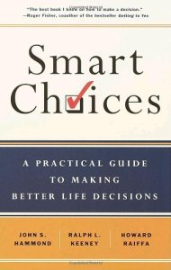
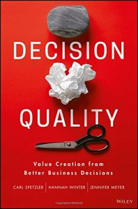
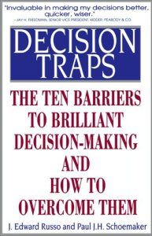
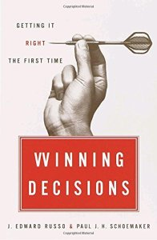
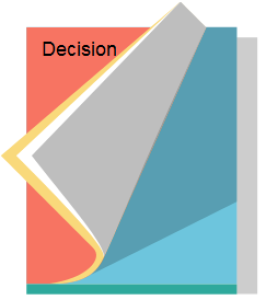

Knowledge Content Library
156
Smart Choices: A Practical Guide to Making Better Life Decisions

by John Hammond, Ralph Keeney (SDP Fellow), Howard Raiffa
An easy-to-read and practical guide to making better life decisions.
An easy-to-read and practical guide to making better life decisions.
continue to: amazon.com
341
Decision Quality: Value Creation from Better Business Decisions

by Carl Spetzler (SDP Fellow), Hannah Winter, and Jennifer Meyer (SDP Fellow)
Add value with every decision using a simple yet powerful framework
Add value with every decision using a simple yet powerful framework
continue to: amazon.com
162
Making Good Decisions
by Reidar B. Bratvold and Steve Begg (SDP Fellows)
Best seller in the Society of Petroleum Engineers community.
Best seller in the Society of Petroleum Engineers community.
continue to: store.spe.org
159
The Principles and Applications of Decision Analysis (the "Blue Books")

by Ronald A. Howard and James Matheson (SDP Fellows)
Classic reference, 2 volumes. The link below will take you to the Amazon link, and to a full description with links to some of the chapters.
Classic reference, 2 volumes. The link below will take you to the Amazon link, and to a full description with links to some of the chapters.
340
Foundations of Decision Analysis
by Ali Abbas, Ron Howard
A groundbreaking text that explores the art of decision making, both in life and in professional settings.
A groundbreaking text that explores the art of decision making, both in life and in professional settings.
continue to: amazon.com
166
Decision Traps: The Ten Barriers to Decision-Making and How to Overcome Them

by J. Edward Russo and Paul Schoemaker
Barriers to making good decisions and guidance on how to overcome them.
Barriers to making good decisions and guidance on how to overcome them.
continue to: amazon.com
345
Winning Decisions: Getting It Right the First Time

by J. Edward Russo and Paul Schoemaker
A comprehensive, one-of-a-kind guide to the proven methods of making critical business decisions confidently, quickly–and correctly.
A comprehensive, one-of-a-kind guide to the proven methods of making critical business decisions confidently, quickly–and correctly.
continue to: amazon.com
170
Advances in Decision Analysis: From Foundations to Applications
by Ward Edwards, Ralph F. Miles, Jr. and Detlof von Winterfeldt
Covers the broad scope of decision analysis at an advanced level.
Covers the broad scope of decision analysis at an advanced level.
continue to: amazon.com
174
Introduction to Decision Analysis: A Practitioner's Guide to Improving Decision Quality

by David C. Skinner
Excellent resource for managers, technical professionals, and decision analysts, regardless of experience level with decision analysis.
Excellent resource for managers, technical professionals, and decision analysts, regardless of experience level with decision analysis.
continue to: amazon.com
175
Judgment Under Uncertainty: Heuristics and Biases

by Daniel Kahneman, Paul Slovic, Amos Tversky
A collection of classic articles on this important subject.
A collection of classic articles on this important subject.
continue to: amazon.com
349
Choices, Values, and Frames
by Daniel Kahneman and Amos Tversky
Choices, Values, and Frames presents an empirical and theoretical challenge to classical utility theory, offering prospect theory as an alternative framework.
Choices, Values, and Frames presents an empirical and theoretical challenge to classical utility theory, offering prospect theory as an alternative framework.
continue to: amazon.com
343
Decision Analysis for Managers

by David Charlesworth
This book gives you the tools to... * clarify and reach alignment on goals and objectives and understand trade-offs, * develop and examine alternatives, * systematically analyze the effects of risk and uncertainty, and * maximize the chances of achieving your goals and objectives.*
This book gives you the tools to... * clarify and reach alignment on goals and objectives and understand trade-offs, * develop and examine alternatives, * systematically analyze the effects of risk and uncertainty, and * maximize the chances of achieving your goals and objectives.*
continue to: amazon.com
188
Economic Evaluations and Investment Decision Methods
by John M. Stermole and Franklin J. Stermole
Introduction to the concepts of time value of money and the related decision criteria used to evaluate investments.
Introduction to the concepts of time value of money and the related decision criteria used to evaluate investments.
continue to: amazon.com
194
Making Decisions

by Dennis Lindley
Book shows that only maximization of expected utility leads to sensible decision-making.
Book shows that only maximization of expected utility leads to sensible decision-making.
continue to: amazon.com
199
Structured Decision Making: A Practical Guide to Environmental Management Choices

by Robin Gregory, Lee Failing, Michael Harstone, Graham Long, Tim McDaniels, Dan Ohlson
Short introductory guide to this form of decision making aimed at environmental managers and scientists.
Short introductory guide to this form of decision making aimed at environmental managers and scientists.
continue to: amazon.com
300
The Evolution of Decision Analysis

By Ronald Howard
Article #1 in The Principles and Applications of Decision Analysis (the "Blue Books")
Article #1 in The Principles and Applications of Decision Analysis (the "Blue Books")
303
Influence Diagrams

By Ronald Howard and James Matheson
Article #37 in The Principles and Applications of Decision Analysis (the "Blue Books")
Article #37 in The Principles and Applications of Decision Analysis (the "Blue Books")
305
Prospect Theory: An Analysis of Decision Under Risk

By Daniel Kahneman and Amos Tversky
Article #48 in The Principles and Applications of Decision Analysis (the "Blue Books")
Article #48 in The Principles and Applications of Decision Analysis (the "Blue Books")
306
The Framing of Decisions and the Psychology of Choice
By Amos Tversky and Daniel Kahneman
Article #49 in The Principles and Applications of Decision Analysis (the "Blue Books")
Article #49 in The Principles and Applications of Decision Analysis (the "Blue Books")
531
Six steps to making a Quality Decision
Steve Begg, Publications (Journal Article)